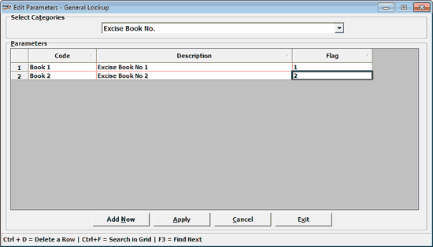

The General Lookup window for defining Excise Book Numbers is displayed.

Select Excise Book No. from the list, under Select Categories
Click Add New to open the grid to add new lookup entries under the selected category
Specify code, description and appropriate value of flag under respective columns, under Parameters
If the value of the Flag is:
0 – the Excise Book Number will not be available for selection while generating the Excise Invoice
1 or any numeric number – the Excise Book Number will be available for selection while generating the Excise Invoice
Note: If there are multiple Excise Book Numbers defined in the General Lookup, while generating the Excise Invoice, the Excise Book numbers are sorted in the ascending order of the numeric values assigned to their flags, for selection.